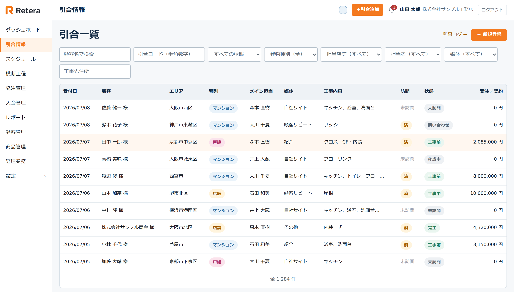
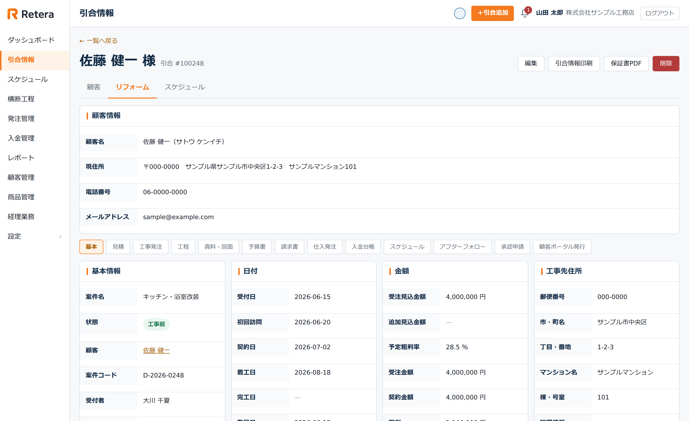
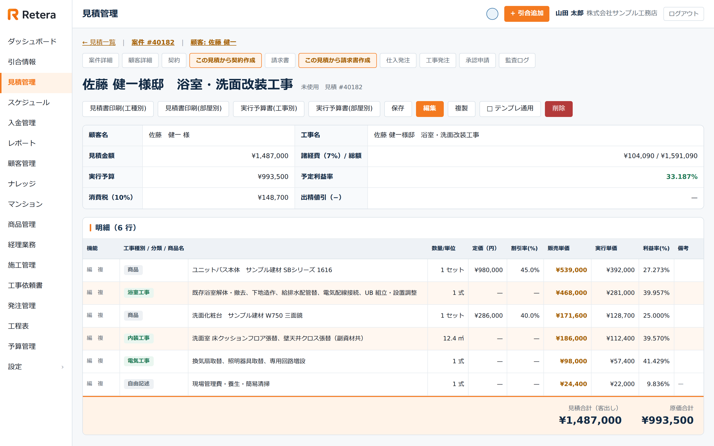
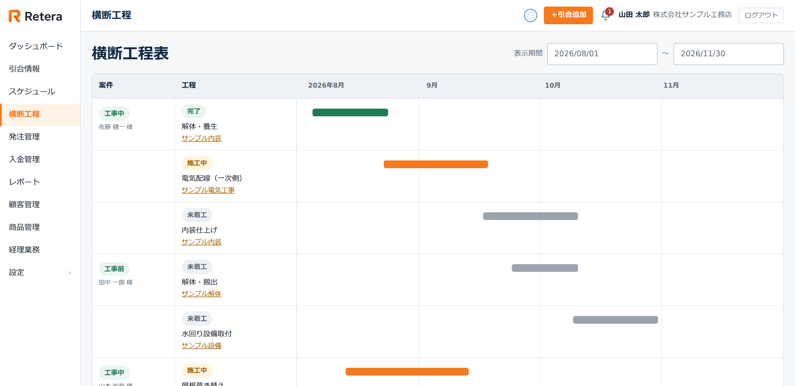
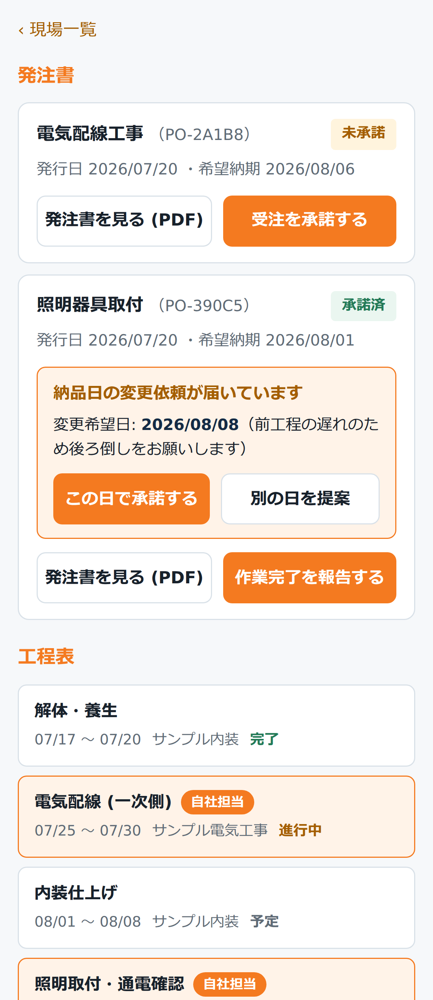
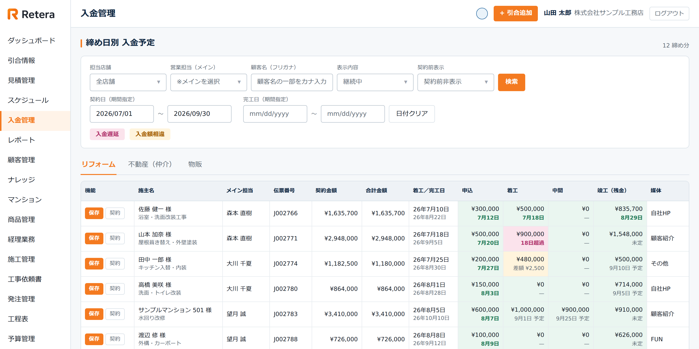
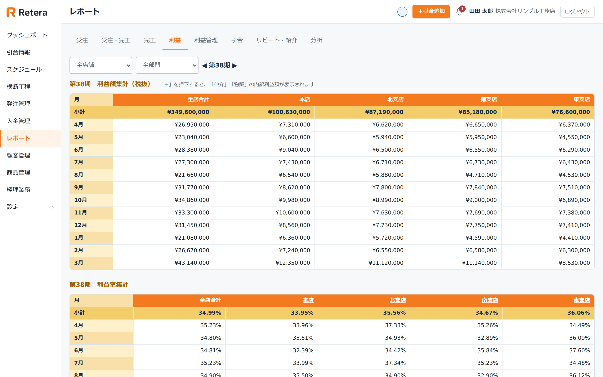
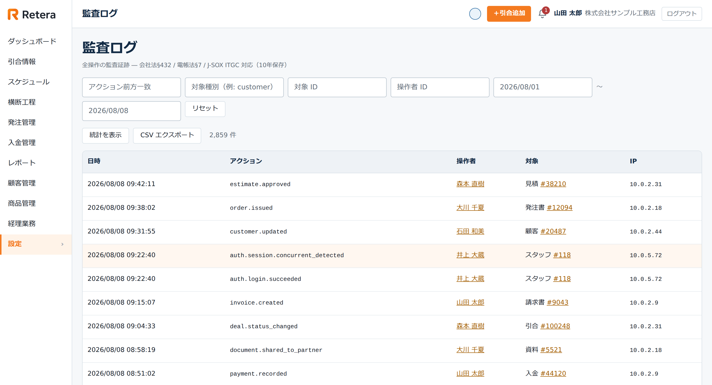

Retera でできること
引合を受けてから入金まで、そしてそのあとの分析まで。 仕事の流れに沿って並べています。
- 引合・顧客
- 見積・契約
- 工程
- 発注・協力業者
- 請求・入金
- 分析・評価
Retera は 2027 年 提供開始予定です。導入のご相談は、先行して承っています。
01引合・顧客
お客様と案件を、1か所に集める。


※ 画面はすべてダミーデータで表示しています。
-
引合の登録と一覧
受付日・顧客・エリア・建物種別・担当者・媒体・状態で絞り込めます。誰がどの案件を持っているかが一覧で分かります。
-
自社サイトからの取り込み
ホームページの問い合わせフォームから受け取る口を用意しています（初期設定が必要です）。
-
顧客管理
顧客の台帳、顧客ランク、宛名ラベルの印刷ができます。
02見積・契約
見積の金額が、そのまま契約と請求になる。
- 見積
- 契約
- 請求

明細を入れると、見積金額・原価・予定利益率がその場で出ます。
上の「この見積から契約作成」「この見積から請求書作成」から、同じ数字のまま次へ渡ります。
※ 画面はすべてダミーデータで表示しています。
見積の作成
ひな形から組み立てられます。明細を入れると、税込金額・原価・粗利率が自動で出ます。
契約
見積から契約へ引き継ぎます。契約日・契約金額・入金の予定まで、同じデータの上でつながります。
電子契約（GMOサイン）はオプションで個別に対応します
予算書
案件ごとの実行予算を持てます。見積の金額と原価を突き合わせられます。
印刷
見積書、工事依頼書、保証書などを印刷・PDF 出力できます。
03工程
どの現場が、いつ動くのか。

※ 画面はすべてダミーデータで表示しています。
-
横断工程表
案件をまたいで、工程を1枚の時間軸に並べます。完了・施工中・未着工が色で分かれるので、詰まっている場所がその場で見えます。
-
工程テンプレート
よく使う工程の組み合わせをひな形にして、案件ごとに呼び出せます。
-
スケジュール
担当者ごと、グループごとの予定を週表示・月表示で見られます。設備の予約もできます。
-
現場写真
案件に紐づけて写真を残せます。協力業者がスマホから上げたものも同じ場所に集まります。
04発注・協力業者
業者に、別のサービスを契約させない。

※ 画面はすべてダミーデータで表示しています。
-
発注・工事依頼
引合から発注書や工事依頼書を起こします。よく使う内容はテンプレートから呼び出せます。発注書の発行には承認を挟めます。
-
協力業者の窓口
業者は自分のスマホから、受けた工事・発注書・工程・現場写真・資料・請求と支払いを確認できます。発注書の承諾や納品予定の報告もその場でできます。
-
資料の受け渡し
案件ごとに図面や資料を保管して、必要なものだけを業者に公開できます。見せたくないものは、見せずに置いておけます。
-
業者の管理
協力業者の台帳、業者向けのお知らせ配信。
05請求・入金
お金の出入りを、同じ場所で追う。

1件ずつに申込・着工・中間・竣工の入金予定と実績が並びます。入金遅延と入金額相違は色で分かれるので、追うべきものがその場で見えます。
※ 画面はすべてダミーデータで表示しています。
-
請求書
見積や引合から請求書を起こします。請求の予定も一覧で持てます。
-
入金管理
入金の予定と実績を管理します。未回収の請求を経過期間ごとに並べて見られます。
-
業者への支払い
業者からの請求と、支払いの予定を管理します。仕入の明細や単価を取り込むこともできます。
-
月次の締め
締めた時点の受注・完工・粗利を確定値として保存します。前月を締めないと当月は締められず、過去を書き換えると分かる仕組みを月ごとに連結して持ちます。
06分析・評価
入力した数字が、そのまま経営の道具になる。

※ 画面はすべてダミーデータで表示しています。
-
利益のレポート
店舗別・月別の利益額と利益率。受注・完工・引合の切り口でも見られます。リピートと紹介は「前の担当者」別に集計でき、誰の仕事がリピートを生んでいるかが件数と契約額で分かります。
-
目標と実績
社員ごとに期の売上目標と粗利目標を決められます。前期からのコピーも可。達成率は社員別と店舗別の両方で見られます。
-
期の始まりと締め日は、会社ごとに
決算期の始まり、締め日、受注をいつの売上として数えるかを、設定画面から変えられます。いつから適用するかを指定できるので、過去の集計は変わりません。変更した人と日付も残ります。
-
媒体別の効果
どの入口から来たお客様が契約に至っているか。引合の数だけでなく、契約額・利益額・利益率まで追えます。自社集客・手数料媒体・紹介系のグループ別に並びます。
07AI
下書きまで。決めるのは、人。
工事の日程の下書きは提供準備中です。以下は、提供するときの決めごとです。
工事の日程は、AI が案を出します。工事の内容から作業日程の下書きを作り、 採用するかどうかは人が決めます。
見積の金額、発注の内容、契約の条件を、機械が決めることはありません。 工事依頼書の下書きでは、金額や単価を AI に渡していません。
AI
- 工事の日程の案
- 作業日程の下書き
人
- 採用するかどうか
- 見積の金額
- 発注の内容
- 契約の条件
08記録・セキュリティ
誰が、いつ、何をしたか。

※ 画面はすべてダミーデータで表示しています。
-
監査ログ
主要な作成・更新・削除・承認の操作を、日時・操作した人・対象・IPアドレスまで記録します。会社法432条と電子帳簿保存法を意識した、長期保存の監査証跡です。法律が求めるのは7年ですが、契約・請求・承認の記録は10年保存します。CSV で書き出せます。
-
個人情報の管理
保有期間を過ぎた個人情報を検知します（個人情報保護法22条）。開示・訂正・利用停止の請求は、担当者が受け付けて管理できます（同28条）。
-
承認の記録
承認・却下の記録は10年間保存され、画面からは取り消せません。誰が承認したのか、氏名とメールアドレスまで控えます。
-
会社ごとの区切り
1つの仕組みを会社ごとに区切って提供します。ほかの会社のデータが混ざることはありません。
09必要になったときに開ける機能
必要になったときに開ける機能
-
不動産業務
物件と反響、仲介の契約、業務代行。反響をリフォームの引合に紐付ければ、そのあとの工事と入金まで同じ流れでたどれます。確度と活動フェーズ、活動履歴を残せるので、止まっている反響が分かります。
-
物販
リフォームに付帯する物販。受付から見積・契約・入金予定まで扱えます。
-
AI（提供準備中）
工事の日程案の下書き。
使わない機能は閉じておけます。1つにまとめるというのは、全部入りを押し付けることではありません。